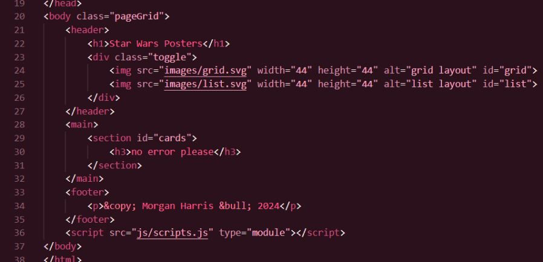
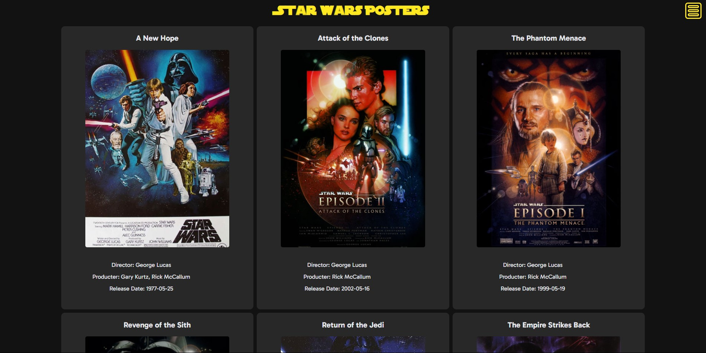
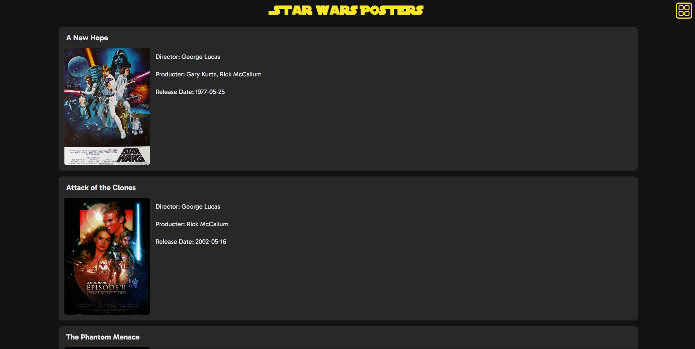

I was tasked with creating a website that had 7 different Star Wars movie posters for a midterm project. However, I needed to create this website primarily using all the JavaScript knowledge that I had acquired throughout half of the semester. I only had about a week to complete this website, and I had to include two different ways to view the website (in a list view and a grid view), pull all the data from a JSON file, and make it look nice using CSS knowledge from a previous class. So, I had my work cut out for me. The first step I had to take was creating a list of all the skills I needed to include in this project. This helped to mainstream the process and it kept me from guessing on everything I needed to include. To make this list, I used a combination of the requirements provided to me as well as the guiding videos present in the assignment page. These all did a few things that helped me a ton in creating this website: Know what elements to include, how to include them, what the website should look likem, how it should function. After I planned my project, it was time to start coding it. Thanks to all the knowledge and tools I had gained from previous projects leading up to this one, most of the process was pretty streamlined. That doesn’t mean I didn’t run into any problems, though.
One of the first problems that I ran into was that the poster names were not matching up to the poster images. However, after some frustrating troubleshooting, I realized what the problem was. So, to get the images for these posters, I needed to pull them from a website. The link for each image was almost identical, except for a single number at the end that order the images. The JSON data had the same sort of thing; its episode_id also orders the movies. So, all I needed to do was insert the number from the episode_id into the link, and it would display the correct movie. Seems simple, right? Well, it didn’t seem so, at least not at first.
See, after much headache, I finally realized that the problem I was having wasn’t necessarily my code. It was how the JSON file was set up. The link I was provided puts the movie posters in chronological order. However, the JSON data puts the movie in release order. And since I can’t modify the website, I modified the JSON file. All it took was one minor little tweak to the JSON file to reflect the links, which was as simple as changing the numbers in the episode_id. The next part I needed to complete was the styling. Although this is normally the fun part for me, I ran into a few issues here as well. First of all, the button I had to toggle between the grid and list view was displaying as different sizes upon clicking it. The list view was also just generally not acting as expected. To solve the inconsistent button sizes, I needed to change where the image for it was located. So, I moved it from its initial division tag to a section tag. Solving the problem with the list view was quite simple too. I initially had the list view set to display: flex, which was giving me results that I was not expecting. After some quick searching, I learned about display: grid. This solved pretty much all the problems I had with it - it was much easier to use in this case too.
Creating this website was quite the journey, and I was one that I learned a lot from. First of all, planning my project ahead of time made the process go by much faster that it would have if i hadn’t. I knew exactly what needed to be done, which I believe led to a better end result. The main lesson I gleamed from this though is that not all answers to problems are straightforward. Even though they all turned out to be simple solutions, they weren’t my first, or second, or third, thought. But at the end of the day, I’m very happy with how this project turned out, and all of the things I learned here I can use for future projects, which will make them even better too.
 